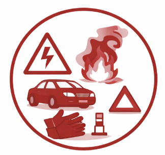
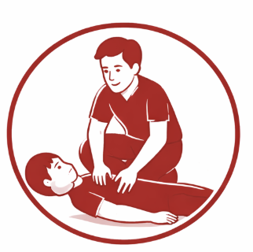
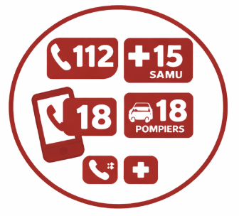

Les 4 étapes pour porter secours
Face à toute situation d'accident, la priorité est de protéger la zone, d'examiner la victime afin d'apprécier la gravité de son état et d'alerter les secours
Étapes d’intervention
💡 Cliquez sur une étape pour plus de détails.
1
🔒 Sécuriser
2
👁️ Analyser
3
🆘 Alerter
4
⛑️ Secourir